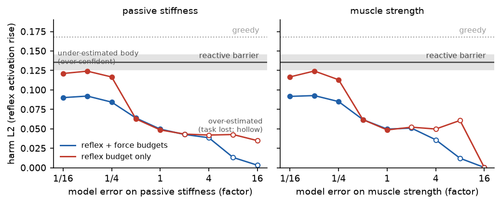
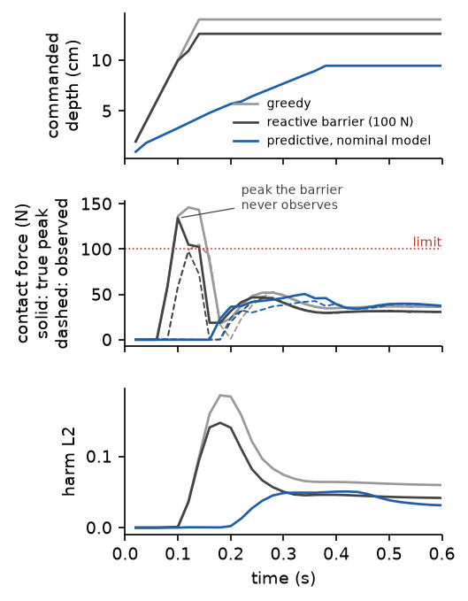
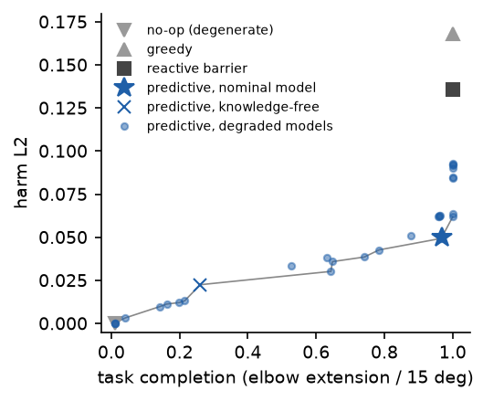
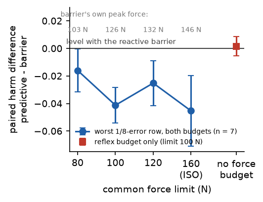
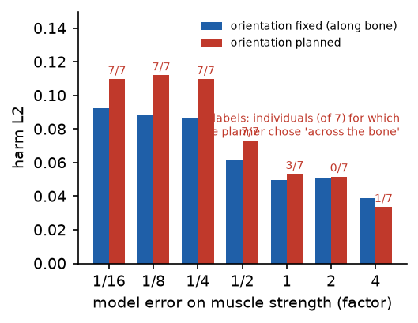

Draft · 2026 · sole author
A care robot that predicts how your body will flinch before it touches you is gentler than one that brakes on force — but only as good as its model. This is the measurement of how wrong that model may be.
Mu-Hua (Maurice) Wang · National Yang Ming Chiao Tung University
Same person, same job, three ways to touch. The forearm of a simulated care recipient (MyoSuite myoArm, 63 muscles, with a stretch reflex) rests as if on a bed; the robot has to press it until the elbow extends by 15 degrees. Left: a greedy press at 1 m/s. Middle: the standard answer, a force barrier that brakes at 100 N — and still lets the impact peak through, because the peak is over before the sensor has seen it. Right: a controller that plans the press against a copy of the person's body and stops where the copy says the muscles would flinch. Bars: peak force against the limit. 5× slow motion.
A care robot that touches a person can be gentle in two ways: react to the contact force it measures, or predict how the person's body will respond before it touches. Reactive control needs no model of the person; predictive control needs one, and the model can be wrong. We ask how wrong it may be. We define gentleness on the recipient's side, as the involuntary stretch-reflex response of the muscles the contact lengthens, and measure it in a musculoskeletal simulation of a supported forearm pressed by a robot end-effector.
A force-barrier controller protects the force it can observe but not the impact peak, which precedes observation. A predictive controller that plans against a copy of the recipient's body reaches the same task at 37 % of the barrier's harm. We then degrade that copy along seven physical axes over a 256-fold range in both directions. Two failure modes appear where preregistered: over-estimating the body makes the robot conservative and the task fails; under-estimating it makes the robot over-confident and harm rises. With reflex prediction alone the over-confident branch crosses the barrier at a four-fold reflex-gain error on one axis and comes within 8 % of it at an eight-fold stiffness error in six degrees of freedom. Adding contact-force prediction keeps the full margin through a sixteen-fold error on every axis, because contact force depends on the robot's own stiffness and the contact geometry, which the robot knows. Only muscle strength and passive stiffness need to be accurate. The result is a specification, not a controller.

Harm on the recipient against how wrong the robot's model is, on a log scale from 1/16 to 16-fold, for the two parameters that turn out to matter. The grey band is the reactive barrier (19 paired individuals); dotted is the greedy press. Left of 1 the model thinks the body is softer or weaker than it is and the robot presses harder than it should; right of 1 it thinks the body is stiffer and stops pressing — hollow markers mean the task was lost. Red plans against the predicted reflex alone and climbs to within 8 % of the barrier. Blue also predicts the contact force and stays a clear 0.04–0.05 below it all the way to a sixteen-fold error.
What the harm axis is. L2 is the rise in activation of the muscles the contact lengthens, relative to that person's own contact-free baseline — the stretch reflex the touch provokes. It is a proxy for a protective response, not a measure of pain, and nothing on this page claims otherwise (see Boundaries).
The same controller with a wrong model of the body. Left: the model believes the arm is eight times softer than it is, so the robot presses like the greedy arm — this is the over-confident branch. Middle: the nominal model. Right: the model believes the arm is four times stiffer, and the robot barely touches it — the task is lost, and a harm-only score would have called this the gentlest of the three. Both directions were preregistered; both appeared.
What holds the line: predicting the force as well. Same eight-times-too-soft model on both sides. Left plans against the predicted reflex only. Right also refuses any plan whose predicted contact force exceeds 100 N — and stops short, because contact force under a stiff position servo is set mostly by the robot's own stiffness and where it touches, which the robot knows even when it is badly wrong about the muscles.
A freedom the wrong model misuses. Let the planner also choose how to orient its capsule and a model that under-estimates the body picks "across the bone" in 7 of 7 individuals — and does more harm than with the orientation fixed. An extra degree of freedom is an extra place to be wrong.

Why reacting is late, drawn. One episode per arm. In the middle panel the solid line is the force the recipient actually experienced within each 20 ms control step and the dashed line is what the controller observed at the step boundary. The barrier's true peak is 134 N against its 100 N limit; the largest force it ever saw was 98 N. It protected the quantity it could see.
Every interval is a paired-t 95 % interval over simulated individuals (19 unless marked), one difference per individual. A negative harm difference means the predictive arm was gentler than the barrier.
| Result | Estimate (95 % CI) | Holds |
|---|---|---|
| The reactive barrier protects the steady force and misses the impact peak Peak above its own limit in 26 of 28 trials at 80–120 N. At the ISO 160 N the barrier activates in 2 % of steps: the filtered controller is the unfiltered one. | 126 N peak vs 100 N limit 146 N vs 160 N (never binds) |
1 and 6 DoF, four limits |
| Prediction with a nominal model completes the task at 37 % of the barrier's harm Giving the copy the individual's own parameters instead of the population nominal changes harm by 0.001. | −0.086 [−0.094, −0.078] 50 N vs 123 N |
n = 19 |
| Under-estimating the body makes the robot over-confident; over-estimating it loses the task Harm rises monotonically from 0.050 to 0.092 as the model gets softer; task completion falls from 0.97 to 0.01 as it gets stiffer. On one axis the over-confident branch crosses the barrier (reflex gain ×1/4, reflex budget only, 7 individuals). | 6 DoF: no crossing in [1/16, 16] 1 DoF: +0.009 [+0.002, +0.015] |
both directions, as preregistered |
| Force prediction is what keeps the over-confident branch below the barrier Remove the force budget and the eight-fold-too-soft model comes within 8 % of the barrier. With seven individuals that row was indistinguishable from it (+0.002 [−0.005, +0.009]); nineteen resolve it. | without: −0.012 [−0.020, −0.004] with: −0.044 [−0.052, −0.035] |
ablation, n = 19 |
| Only muscle strength and passive stiffness need to be accurate Joint damping, segment mass and reflex delay move harm by at most 0.018 across a 256-fold range. Range of motion is one-sided: under-estimates paralyse the robot, over-estimates are invisible because this task never reaches the joint limit. | 7 axes × 8 factors worst three-axis gap −0.062 |
specification |
| A learned network in the same loop buys about 60 % of the physics copy's benefit One axis, at 0.25 m/s (2.5× its fastest training speed). An untrained network reproduces the greedy press exactly — a knowledge-free learned model is no better than no model, not worse. | vs barrier −0.023 [−0.030, −0.015] vs copy +0.016 [+0.006, +0.025] |
n = 7, 1 DoF |
| The planner's extra orientation choice hurts every wrong model and helps no correct one | across chosen 7/7 at ×1/4 … ×1/16 | n = 7, post hoc |
| Model parameter | Error that still beats the barrier | What happens beyond |
|---|---|---|
| Muscle strength | 1/16 – 16 with force prediction ~1/4 without | Too soft: over-confidence; too strong: task lost |
| Passive stiffness | 1/16 – 16 with force prediction ~1/4 without | Same shape; within 8 % of the barrier at 1/8 without force prediction |
| Reflex gain | 1/16 – 16 (6 DoF) crosses at 1/4 on one axis without force prediction | Over-estimates paralyse the robot at ×8 |
| Range of motion | 2 – 16 | Under-estimates paralyse the robot; over-estimates are invisible for this task |
| Joint damping, segment mass, reflex delay | 1/16 – 16 | At most 0.018 of harm across the whole range |
One recipient body, one contact site (the forearm), one task. Whether the same two parameters carry the specification at the shoulder, the hip or the trunk is a question these data cannot answer, and the paper says so.
The recipient is MyoSuite's myoArm (38 joints, 63 Hill-type muscles, MuJoCo, 2 ms step) with the upper arm fixed as if resting on a bed and a stretch reflex on the eight elbow muscles, its gain fixed once against an independent anchor and never retuned. Individuals differ by a log-normal factor (σ = 0.25) on strength, stiffness, damping and mass. The robot is a capsule on a stiff position servo. Every controller sees exactly the same observation — its own pose, the contact-force vector from a wrist sensor, and three noisy joint angles of the recipient — and a counter proves none of them ever read the true harm.
The predictive arm carries a private MuJoCo copy of the recipient, runs it alongside the real one corrected only by those observations, and picks the push direction and rate whose rollout in the copy makes the most progress within two predicted budgets: reflex and force. The fidelity sweep scales one parameter of the copy at a time by 1/16 to 16. The reactive arm is a control barrier function on the measured force vector with an online-identified contact stiffness; when its bound binds it removes the excess normal push and keeps the tangential command, so it slides rather than brakes.

Task against harm, every condition. The front runs from the no-op corner through the nominal model. Harm alone can be gamed by not touching; the front is what stops that.

The common force limit, swept. The worst eight-fold-error row stays below the barrier at 80, 100, 120 and 160 N; the red point is the reflex-only ablation.

Orientation as a planned choice. Labels count the individuals (of 7) for which the planner chose "across the bone".
Across 24 result files: the main sweep and its preregistered domain extension, the ablation, four force limits, the individual-model control, the orientation arm, the planner check, the one-axis rerun and the learned-model arm. 3,375 of them are predictive episodes.
The harm channel sits behind a counted call. The audit runs before every experiment and the self-test proves it catches a controller that peeks.
Every number in the paper is rebuilt from the raw per-episode files by a script that never reads the paper's own tables. The first pass caught 14 mismatches, including a wrong critical value that had made every 19-individual interval 12 % too wide. All matched after correction.
A servo that was secretly a pendulum. A "true" model with half the real reflex gain. A planner whose budget never actually bound. A random seed that varied the robot instead of the person. Every one produced plausible numbers first; every one is in the build log with the check that caught it.
Two conclusions were withdrawn in the course of this. The pilot's claim that under-estimating the body only paralyses the robot turned out to be a property of the planner, not of the action space; and the seven-seed ablation's "the wrong model meets the barrier" softened to "comes within 8 %" once nineteen individuals resolved it. The page reports the corrected versions and the paper keeps the record.